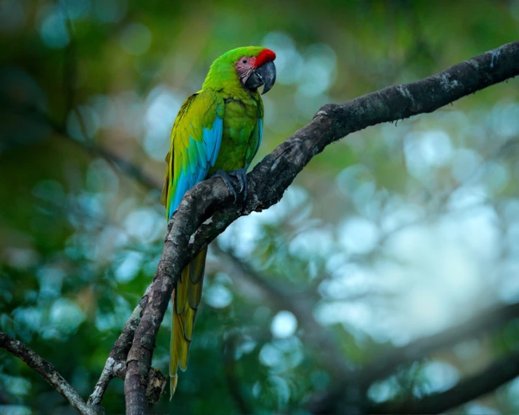
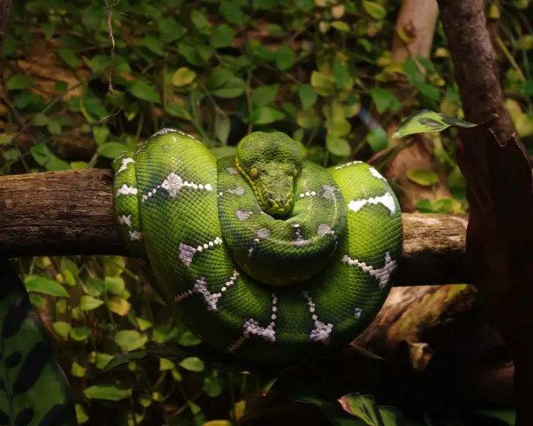

Great Green Macaw
This impressive parrot lives in the dry forests of Central and South America. The Great green macaw is the largest parrot in its natural range and the second heaviest macaw species. It is mainly green in color and appears superficially similar to, and may easily be confused with, the Military macaw where their ranges overlap. Great green macaws are extremely loud birds; they can be heard at great distances and most of their time spend in pairs

Emerald Tree Boa
Emerald green tree boas are non-venomous snakes from South America. Their bright coloration and markings are very distinctive among South American snakes. Juveniles vary in color between various shades of light and dark orange or brick-red before they turn emerald green; this typically occurs after 9-12 months of age. Adult Emerald green tree boas grow to about 6 feet (1.8 m) in length. They have highly developed front teeth that are likely